01 触发
用户在家反复刷手机，想出门但没有明确目的地。
今日去哪儿｜城市微文旅的即时出行系统
基于天气、位置、时间与心情，为年轻人生成一个今天就能执行的附近出门方案。这个 case 重点呈现我如何从产品策略、UX 推导到 UI 规范，把“想出门”压缩成“现在就走”。
主导从 0 到 1 的产品策略定位、全链路 UX 推导与高保真 UI 表达，并用 AI 工具链完成概念验证与作品集叙事整合。
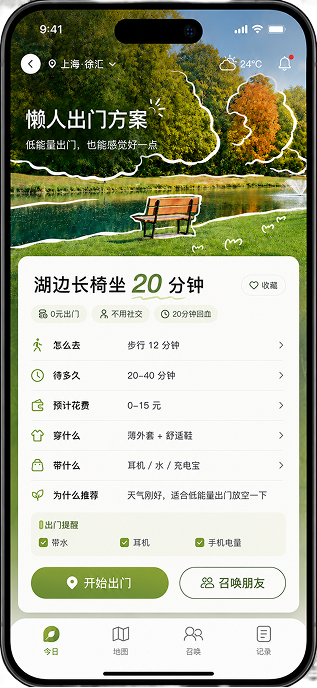
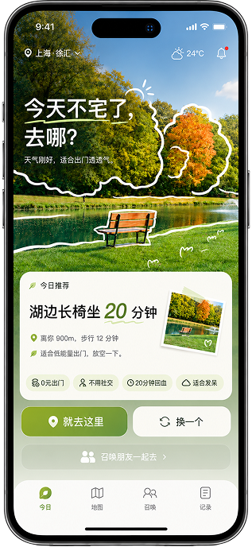
项目背景与我的角色
项目目标是验证年轻人在轻出行场景中，是否需要一个比地图、攻略和点评更靠近“行动启动”的产品入口。作品集重点展示产品判断、UX 推导和 UI 系统化表达。
定义目标用户、使用场景、核心痛点、功能边界与 MVP 验证方向。
梳理用户旅程，推导从推荐、路线、召唤到记录的行动闭环。
完成移动端核心界面、视觉规范、组件层级与展板表达。
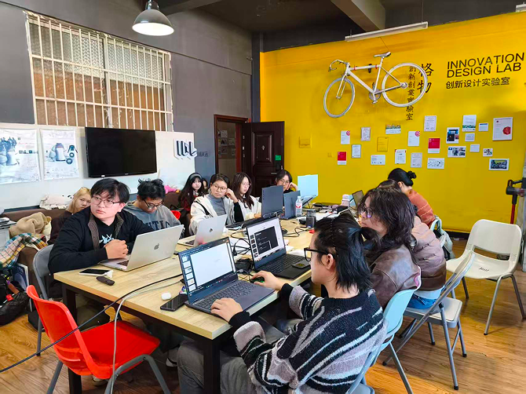
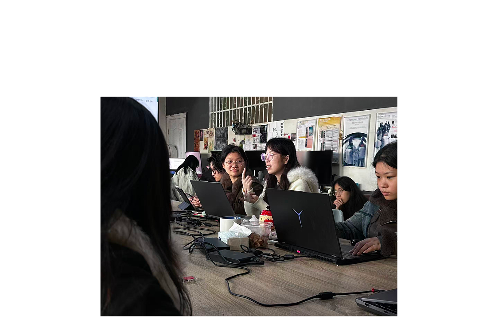
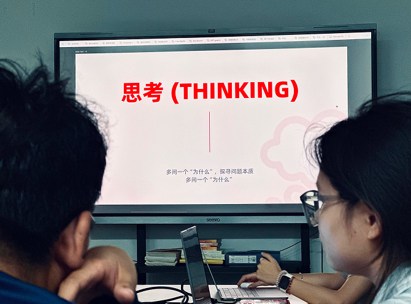
需求发现与痛点数据
地图解决怎么去，攻略解决种草，点评解决吃什么；但在“今天想换个环境”的瞬间，用户仍然会被选择、准备和邀约三类摩擦拖回家里。
调研用户表示：周末或下班后有出门念头，但经常因为“懒得做决定”而放弃。
一次轻出行前，用户平均需要在多个平台之间搜索、收藏、比较和确认路线。
用户对“有人直接给我一个今天可执行方案”的期待评分占位。
信息越多，越不知道哪个适合今天。
路线、预算、天气、装备让轻出行变重。
正式邀请会放大拒绝和沟通成本。
场景故事板
这里预留 AI 分镜插图位置。后续可替换为统一画风的 16:9 场景图，形成“情绪低谷 - 决策介入 - 行动确认 - 社交扩散”的完整故事链。
用户在家反复刷手机，想出门但没有明确目的地。
系统读取天气、位置、时间，并让用户补充心情和预算。
推荐页直接给出“今天可去”的方案、路线与准备清单。
用户先出发，再用低压力召唤邀请附近朋友自然加入。
产品定义与 MVP 策略
MVP 不追求覆盖所有生活服务，而是优先验证用户是否愿意接受“系统替我做第一次选择”。因此首页推荐、出门卡和召唤链路被放在最高优先级。
首屏给答案，减少地点信息流带来的继续筛选。
把路线、预算、天气、准备清单合并成行动确认页。
基于已确认的出门状态，降低邀约的心理门槛。
把出门偏好沉淀为下一次推荐的个人化反馈。
核心功能深度推演
核心亮点 01
信息层级优先展示目的地结论、距离、体验标签和主行动按钮，弱化长列表。
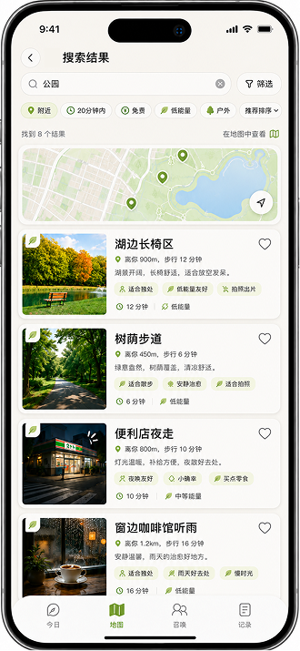
核心亮点 02
路线页把时间、交通、预算和携带物转译为用户出发前能确认的信息。
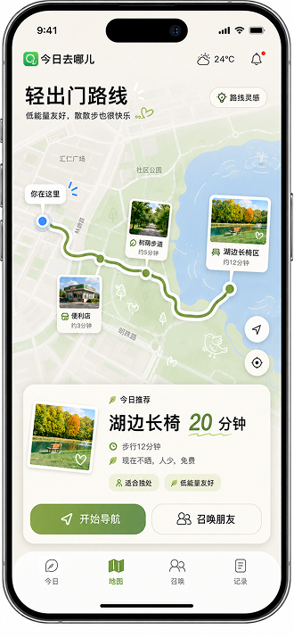
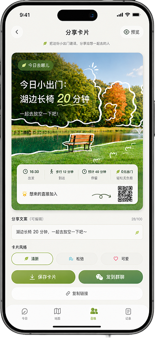
核心亮点 03
把“你要不要出来”改写为“我已准备出发，你可以加入”，降低决策成本。
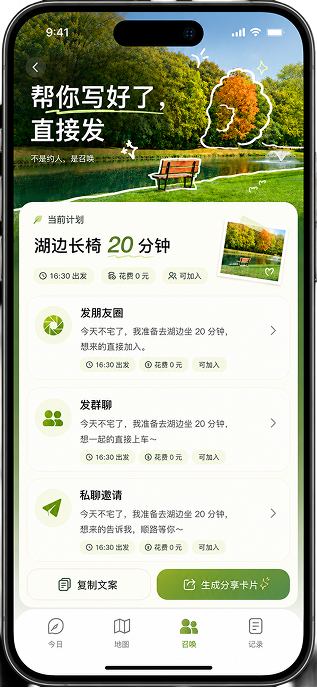
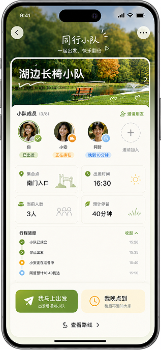
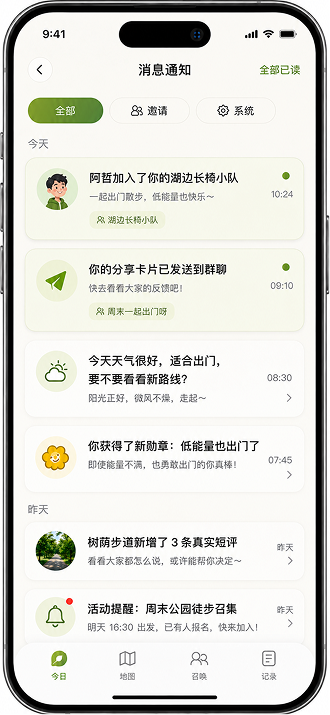
设计系统与设计规范
保留“轻松、当下、附近生活”的品牌感，但降低背景装饰和玻璃拟态重量。组件字阶围绕决策效率设置：结论最大，理由次之，辅助信息保持克制。
H1 48-92 / H2 44-92 / Card 20-30 / Body 14-24，避免首屏“黑砖感”。
卡片半径统一 8px，按钮 44px 起，屏幕图使用固定宽高比容器避免排版死角。
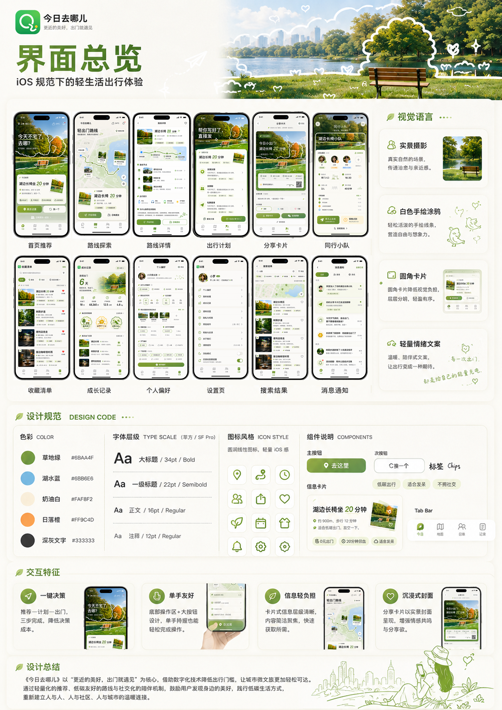
全局展板与未来反思
现阶段输出包括产品概念、调研洞察、核心链路、移动端界面和视觉规范。下一步需要用真实场景任务测试推荐解释、路线可信度和召唤转化。
用“是否愿意立刻出发”而不是点击率评估首页推荐。
记录放弃原因、出门完成率和召唤响应率，反哺策略。
探索附近生活服务合作，但不让商业信息破坏决策效率。
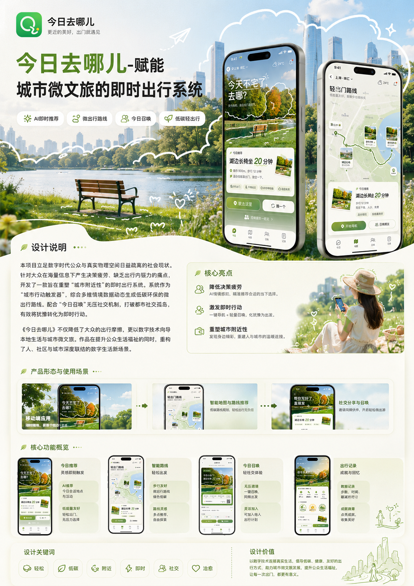
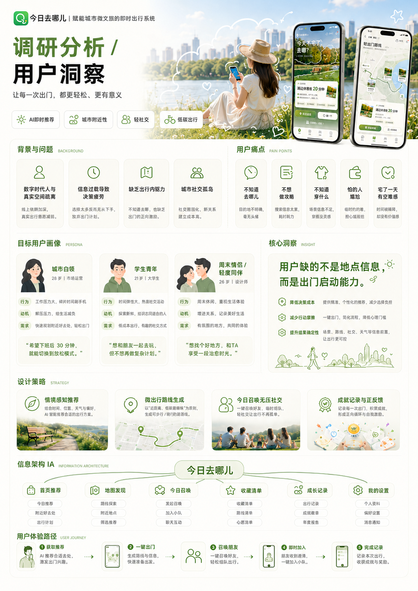
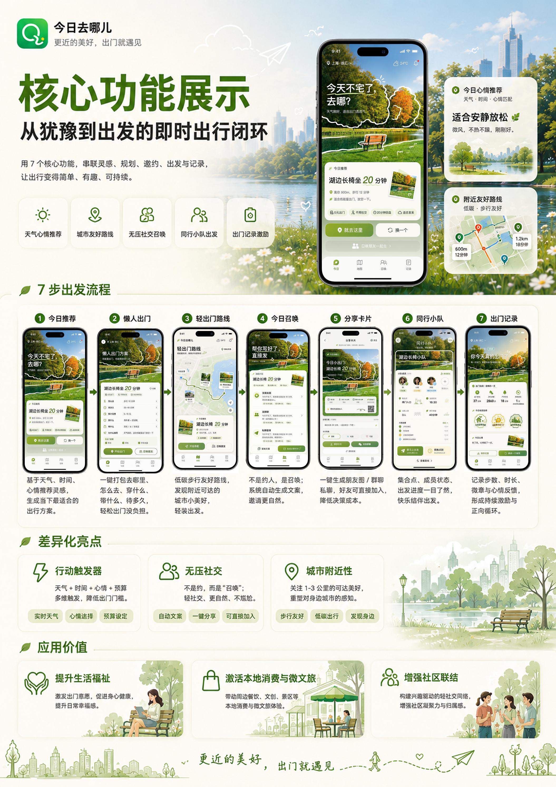